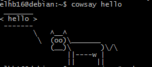
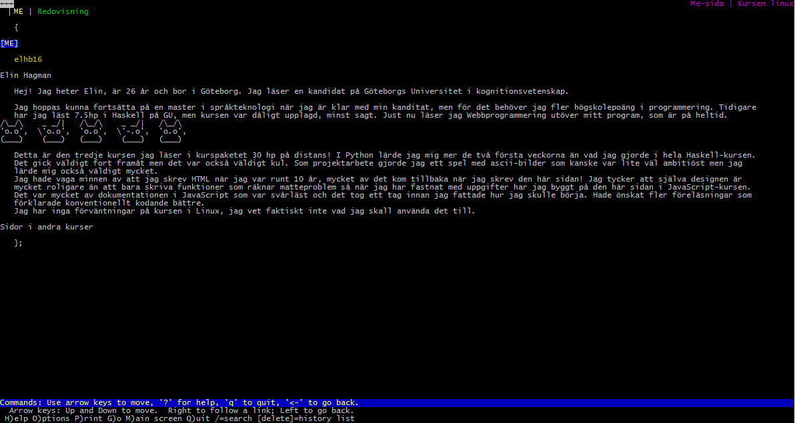

Redovisningar

Av Elin, elhb16
Kmom01
Är du sedan tidigare bekant med Unix, Linux, Debian och/eller terminalen?
Jag har bara använt Cygwin till Windows(7) i de tidigare kurserna Python och JavaScript. Jag har använt Fedora som operativsystsem för länge sedan men det är i princip all kontakt jag haft med Linux. Debian är helt nytt för mig.
Hur känns det med Unix-kommandon på terminalen, är det udda eller bekvämt?
Det känns främst ovant. Jag har lite svårt att använda terminalen för Cygwin, jag tycker att det är svårt att se om jag skriver rätt. Jag brydde mig inte om att läsa speciellt mycket om kommandon när kurspaketet startade utan har i princip bara använt dbwebb-kommandon hittills. Jag har inte fått in nån vana så jag behöver kolla alla kommandon varje gång jag skall skriva något. Förhoppningsvis är det något som blir lättare senare :)
Valde du att köra standard med VirtualBox och Debian eller hur gjorde du?
Jag installerade VirtualBox med Debian Jessie. Jag gick igenom alla delar i instruktionen till kursmomentet men det tog två gånger innan jag lyckades. Idén om att använda Raspberry Pi var kul, och jag hoppas kunna fixa det om jag har lite extra tid.
Var det något som krånglade eller tog extra mycket tid?
Jag lyckades starta Debian första gången men konsolen visade bara markören utan att det gick att göra något. Programmet var igång men till syntes stod det stilla. Jag ominstallerade Debian, det är lite oklart vad som blev rätt andra gången men jag gissar att jag missförstod någon steg i installationen. Själva installationen tog ganska lång tid, men det var ju många steg i installationen som man skulle få rätt! Inställningarna för copy paste mellan Windows och Linux fungerade inte heller, jag gjorde som det står i instruktionen och vad jag kan se ser det rätt ut i inställningarna.
Jag utgick från samma me-sida som jag skrev i JavaScript-kursen men vid valideringen kunde jag se att jag fick många felmeddelanden för CSSLint jag inte sett tidigare, till exempel att hellre använda .class än #id. Detta tog ytterligare tid att läsa om varför och hur det skulle rättas.

Kmom02
Hur känns konceptet med Apache name-based Virtual Hosts? Känner du igen det sedan tidigare?
Nej, jag har aldrig gjort något liknande tidigare. Detta är första gången jag arbetar med webbserver. Det känns väldigt svårt eftersom det är mycket man måste göra och att man måste göra allt i terminalen. Efter att gått genom alla steg runt 30 gånger känner jag dock att jag har lite bättre koll.
Det blir allt fler kommandon i terminalen, hur känns det med terminalen och dess kommandon?
Det är svårt att komma ihåg alla. Jag har skapat ett ark med alla lösenord och "vanliga" kommandon. Något positivt med att göra fel är ju att man får göra om samma sak flera gånger och lär sig det lite bättre. Det går inte alls bra att jobba effektivt i manualen, mycket där är otydligt och till slut slutade jag använda den för att istället söka efter exempel på hur kommandon används.
Gick det bra med ssh-nycklar och rsync över ssh?
Nej. Uppgiften tog fantastiskt lång tid eftersom jag var tvungen att installera en mängd saker för att komma åt kmom-mapparna. Jag hade bara linux-terminalen installerad och jag fick börja med att leta reda på rätt kernels för Debian som behövdes för att kunna köra VirtualBox GuestAdditions för att sedan kunna mounta filerna. Sen insåg jag även att jag behövde mounta igen efter omstart och jag inte hade skrivit ner alla kommandon…
I den första övningen med localhost och dbwebb funkade allt bra, jag kunde kopiera nycklar och logga in utan problem. MEN när jag skulle skapa me.linux.se fick jag felmeddelandet "could not resolve hostname: name or service not known". Hade inget problem med apache-servern i sig. Fick hjälp av en kurskamrat som ändrade ip-adressen från 127.0.0.1 till 127.0.1.1. Felsökning på den sista övningen tog ca 8 timmar.

Hur kändes det att jobba med tmux?
Det tog ganska lång tid innan jag listade ut hur man skulle använda prefixet. De första gångerna hände ingenting och jag spenderade en del tid på att felsöka men det visade sig att jag hade använt piltangenterna på fel sätt. När jag listat ut det gick det snabbt att skapa nya fönster, stänga dem och att skifta mellan dem
Kmom03
Tittade du på videoserien? Vad tyckte du om den?
Om detta avser filmerna från dbwebb så började jag kolla på dem men kunde tyvärr inte höra mycket av vad som sades då det var väldigt låg volym.
Jag kollade även på Kris Occhipintis serie om skriptprogrammering med Bash. Dessa var väldigt lätta att förstå och han förklarade väldigt bra och tydligt. Jag gillade att man fick en liten recap från föregående del i varje ny video.
Är detta din första bekantskap med skriptprogrammering och Bash?
Just script i bash, ja. Vi gjorde dock en liknande uppgift i Python-kursen där vi skulle använda externa moduler till Python med pip för att skapa egna argument med getopts på kommandoraden. Där använde vi också exit-status t.ex där kommandot --help; echo $? ger exit status 0.
Vilka möjligheter/utmaningar ser du med denna typen av skriptprogrammering?
Det sparar ju mycket tid genom att bara köra ett script istället för att skriva det varje gång man vill använda det.
Hur många poäng fick du i uppgiften med irc-loggfilen?
23/23 poäng! Nu i efterhand inser jag att man kanske inte behövde göra de sista uppgifterna. Jag hade redan bråkat lite med head och tail-kommandona så de sista uppgifterna var inte så svåra.
Gjorde du extrauppgiften?
Japp, det var ju mycket enklare en de obligatoriska uppgifterna!
Var det något som var extra svårt eller utmanande i uppgifterna?
Jag tycker att detta kmom var det enklaste hittills! Allt gick förvånadsvärt bra och de fel jag fick var enkla att rätta. Själva syntaxen tog en stund att läsa på om, tyckte det var lite oklart med hur man använder olika operatörer eller enkla vs dubbla parenteser. Jag är inte helt med på om jag själv använt rätt. Hade lite problem med i vilket syfte man skulle använda @, $ eller * . Har även begränsade mattekunskaper och fick lite hjälp med hur man skulle räkna ut primtalsfaktorer. Till uppgiften fick jag valideringsfel när jag använde ints och strings tillsammans och det slutade så här: while [ $((num%i)) -eq 0 ]; do. I början använde jag många variabler direkt i printf men fick valideringsfel för att det borde skrivas separat med %s. När jag körde inspect på servern fick jag även fel på labben eftersom jag skrivit "irclog.txt" med litet l och det inte hittades. Scriptet funkade dock lokalt och med dbwebb validate. Den här gången stötte jag inte heller på några miljörelaterade problem som jag satt med i flera timmar i förra kmom.
Kmom04
Är detta din första bekantskap med JavaScript på servern eller har du testat det tidigare?
Nej, jag har bara använt JavaScript tidigare och detta är första gången jag jobbar med en server över huvud taget.
Vad tänker du om ECMA6, dess nya funktioner och sättet att få tillgång till dem via babel-node?
Det gick smidigt att få tillgång till det. Skönt skönt att kunna använda let i stället för var i for loop, men svårt att använda function logAllArguments(...args) { for (const arg of args) … nu när man i princip skriver arguments.length; i++ i sömnen.
Pilfunktionerna känns jättebra använda eftersom koden blivit kortare när man bara vill skapa en funktion som returnerar något.
Hur gick det att förstå koncepten kring klient och server?
Jag hoppas det! Klienten skickar requests till serven och visar svaren man får- Servern lyssnar på anrop och skickar information tillbaka.
Är du bekant med begreppet funktionell programmering och har du några tankar kring det?
Den första programmeringen jag gjorde överhuvudtaget var Haskell som är inkluderat i Kognitionsvetenskapsprogrammet jag läser. Kursen lämnade mycket att önska då läraren bland annat refererade till mycket av programmeringen som "magi". Det jag gillar nu i efterhand med Haskell är att det var väldigt strukturerat även om man fick mycket fel och trots att man måste skriva väldigt mycket själv så förstår man lättare koden eftersom man inte behöver gissa vad koden gör. Jag känner att jag har bra koll på currying, rekursion och high order functions men inte min kunskap är lite begränsad när det gäller monads och monoids. I kursen hade vi en analog salstenta så vi var tvungna att lära oss funktioner som t.ex. map eller filter utantill. I övrigt är det svårt att byta ut syntaxen när man är van vid vanliga JS.
Övrigt:
Det tog väldigt lång tid att rätta felen i koden. Det känns som att den var känsligare än tidigare, jag satt länge och ändrade trailing spaces och antalet mellanslag i indenteringar. Till slut hämtade jag ett pretty-print plugin till SublimeText som löste allt! Jag fick även felmeddelandet "unexpected token" vid import i filen server.js men kunde inte hitta någon lösning, såg även att fler fått samma fel. Hade också problem med att hitta node, endast nodejs funkade. Löste det med att skapa en symlink till /usr/bin/node efter att ha tittat i forumet. Jag fick även felmeddelandet "The pid file is missing" när jag gjorde inspect, men filen finns i min mapp och den innehåller ett nummer.
Kmom05
Hur kändes det att bekanta sig med inbyggda nodejs moduler?
Svårt. Det kändes som att det fanns begränsad information med exempel på hur det skall användas. Dokumentationen var svårläst. Det var också svårt att hitta exempel när man hade fastnat med en uppgift.
Jag använde import för modulerna istället för att lägga det i en variablen som det stod i uppgiften. Jag testade både med var, och const som det står i dokumentationen men jag fick felmeddelande i JSHint som jag använder till Sublimetext. Import fungerade utan problem.
Jag fick problem när jag hade en gammal version av övningen men fick ok i forumet att använda den.
Är du bekant med JSON API sedan tidigare?
Ja, jag använde JSON för att strukturera mitt program i Python-projektet. Jag tycker att det var avsevärt mycket lättare att hämta informationen man ville åt i Python. Här har jag suttit i många timmar och hamnat väldigt långt efter vilket känns tråkigt.
Hur kändes det att skriva ett litet större bash-skript? Var det något som var mer eller mindre utmanande och tidskrävande?
Allt var jättesvårt. Det kändes inte alls som att jag hade den kunskap som krävdes för detta. Mycket tid gick åt för att testa och gissa mig fram till lösningar. I övrigt hade jag även problem med att uppdatera dbwebb, att använda node och babel-node. I princip allt har gått fel!
Kikade du på källkoden till maze-servern? Har du några reflektioner kring den?
Ganska lätt att förstå, mitt problem var snarare att jag kände att jag hade begränsade kunskaper i bash. Jag kunde läsa av koden men hade ingen aning om hur jag skulle koppla det till bash-scriptet.
Är du nöjd med din mazerunner? Gjorde du nåt speciellt som du vill lyfta fram?
Nej, jag känner mig ganska missnöjd, efter att ha suttit så många timmar utan att något har fungerat lyckades jag få till det med ganska många fullösningar. Jag känner bara att jag ville bli klar snabbt med uppgiften eftersom jag halkat efter!
Kmom06
Hur väl har du fått ordning på begreppen kring klient och server?
Jag förstår principen, men i den här delen var det svårt att lista ut vilken fil som gör vad. Jag tycker det är svårt att få en bra översikt när man delar upp kod i många filer, det är enklare att söka i en fil. I så fall delar jag hellre upp koden i efterhand. Det kanske var särskilt svårt här när man inte har skrivit koden själv och inte vet var man skall leta.
Hur känns det att utveckla i Node.js och den asynkrona programmeringsmodellen?
Jag satt en stund och försökte förstå hur det fungerade, instruktionsvideorna hjälpte en del! Detta kmom gick relativt smärtfritt jämfört med det tidigare. Ett fel jag gjorde i början var att jag inte tänkte på att servern behövde startas om när jag ändrade kod i någon annan fil. Servern stannade även upp ett par gånger utan felmeddelande, listade ut att dessa gånger berodde på att x och y-positionerna inte var en int, så till slut blev jag trött och skrev parseInt() runt alla variabler.
Gick det bra med dina CLI-program i Node.js, några reflektioner kring dem?
Till placeRandom-funktionen utgick jag från "/place/:x/:y". Detta var väl den uppgift som tog längst tid. Här hjälpte instruktionsfilmerna att förstå var jag skulle lägga funktionen. Till de andra uppgifterna hade jag redan det mesta färdigt från tidigare kmom. Till den sista delen klippte och klistrade jag lite i den existerande koden, jag använde getRandoytInclusive för att slumpa ut en placering och den färdiga gameBoard.getSize() för att få ut storleken på spelbrädet. Tyvärr hann jag inte göra extrauppgiften om att skapa en lite smartare spelare, nu är alla drag helt slumpmässiga.
Gjorde du något extra i uppgiften, eller förändrade grundkoden i Gomoku-spelet?
Jag började kolla på uppgifterna, det hade varit väldigt kul! Kikade lite på ett exempel där man rekursivt kontrollerar om brickorna ligger i linje uppdelat på kolumn, rad eller diagonalt. Kanske något man kunde använda för att se vilken spelare som vunnit och för att placera brickan på "bäst" plats. Har tidigare programmerat en (fungerande) algoritm för spelet Towers of Hanoi i Haskell. Tyvärr fanns inte tid till detta om jag skall hinna med projektet också!
Känner du dig sugen, och redo, på att skriva en deltagare till Gomocup?
Jag tycker det är kul med AI och kikade lite snabbt på texten, det hade varit jättekul att delta men tyvärr ligger jag redan efter så det får bli en annan gång.
Kmom07/10
För varje krav du implementerat, dvs 1-6, skriver du ett textstycke om ca 5-10 meningar där du beskriver vad du gjort och hur du tänkt. Poängsättningen tar sin start i din text så se till att skriva väl för att undvika poängavdrag. Missar du att skriva/dokumentera din lösning så blir det 0 poäng. Du kan inte komplettera en inlämning för att få högre betyg.
Skriv ett allmänt stycke om hur projektet gick att genomföra. Problem/lösningar/strul/enkelt/svårt/snabbt/lång tid, etc. Var projektet lätt eller svårt? Tog det lång tid? Vad var svårt och vad gick lätt? Var det ett bra och rimligt projekt för denna kursen?
Avsluta med ett sista stycke med dina tankar om kursen och vad du anser om materialet och handledningen (ca 5-10 meningar). Ge feedback till lärarna och förslå eventuella förbättringsförslag till kommande kurstillfällen. Är du nöjd/missnöjd? Kommer du att rekommendera kursen till dina vänner/kollegor? På en skala 1-10, vilket betyg ger du kursen?